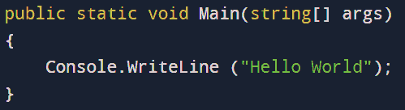
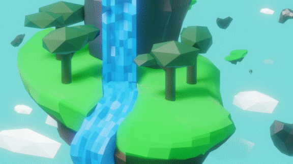
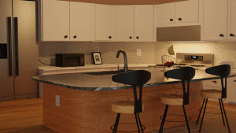
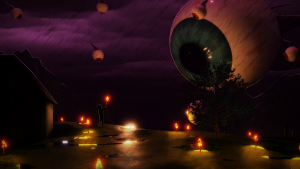
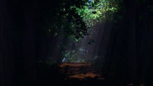
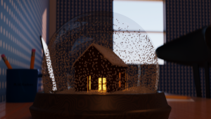

When I was 10, I wanted to learn how to play the guitar, so my parents bought me one and enrolled me into a class.
My teacher taught the basics and told me to play a lot of classical songs.
I burned myself out after a couple years and stopped completely
I didn't touch my guitar for 4 years
4 years later, I went to community college through running start.
I enrolled into an audio engineering course and learned a lot about digital music.
I enjoyed it so much, that I started learning about DAWs in my own time.
I even played my guitar again.
but it still didn't go anywhere.
One quarter later, I enrolled in my very first computer science class.
After learning the fundamentals, I wrote my first program and I loved the process.
I stuck with it and continued taking CS classes each quarter.
I finally knew what I wanted to do.

Then, the pandemic hit.
Everything was suddenly moved online, and there wasn't much to do outside of classes.
So, I tried something new: 3D-Modelling.
I started with a low-poly island

And it went from there




Then, I was introduced to game development